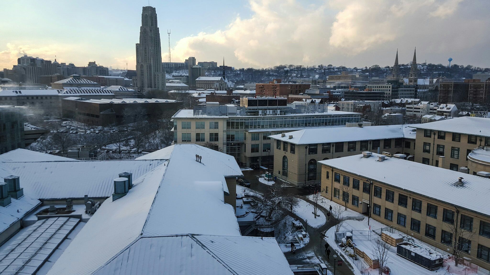

January 13, 2016 - Wednesday
Pretty average day for me I believe... This entry is how I picture most of my entries in the future. School will pick up pretty soon and be the same routine just about every day. Oddly enough, I don't have much work right now that calls for immediate attention, but I believe that's just my laziness talking.
One concern that I do have as of right now is the progress of Quad Academy. We have 6 students coming in this Sunday, yet we have absolutely nothing for them to do for the rest of the semester. Not sure how this will go, but hopefully things will turn out fine.
January 12, 2016 - Tuesday

First legit snowfall of the year! No matter how numb my ears are, frozen my hands are, and shivery my body is... I'll always choose a view like this over personal pains.
January 11, 2016 - Monday
First day of my 4th semester here... It's really odd to not be a beginner anymore, even though I definitely still feel like a freshman. For some reason, the semesters keep passing by me in a flash, yet every single day is quite dreadfully slow. I'm pretty excited to start a new semester with energy. But like always, I'm sure that energy will lose momentum and I'll just be one of those people that dreads going to classes.
Mondays, Wednesdays, and Fridays are my nicer days. I don't have 3 hour labs at night. That will start soon, and I know for sure that it'll be a sad time.
January 10, 2016 - Sunday
Got back to the burgh' today. Surprisingly, a friend of mine was on the same plane ride back from TPA to PIT. We didn't know it, but it was pretty fun to have some company on the depressing 28X ride back to campus.
It is BEYOND cold here. Being back in the warm temperatures of Florida will surely be missed, but time to adjust my sleep schedule, motivation, and body comfort to cold temperatures again. I'm excited for a new year, but it's always sort of tiring and dreadful...
January 9, 2016 - Saturday
Tomorrow, I leave to go back to Pittsburgh. There's always this weird feeling when I leave home, and quite frankly, I don't think I'll ever get used to it. I'm pretty adaptable to my surroundings, and when I am in a certain place, I typically don't think about other places that I could in. Everytime I leave home, I always feel bad leaving my family. It's especially bad this time because I am leaving my mom in a house alone.
My brother is up in college and my dad is in San Francisco working. My mother has to stay in this house that was once filled with family, but now is filled with empty furnitures. I feel guilty for leaving to go to school in a different state, even though my life here at home is 100% more easy and relaxing. Here at home, I'm relieved of all responsibilities. I literally get to be a daughter, and that's it. My laundry gets done, my food gets cooked, and everything that I typically do myself when I'm up at CMU, is done by my mommy :).
It seems like I dread going up to school because of this reason... this laziness. But in reality, it's only because it pains me to picture my mom alone in the house. I have yet, and probably will never get used to leaving a place. When you've built relationships in a town and memories with people, it's hard to say goodbye, even if it's temporary. I'll hopefully be back in March... but if not, maybe in 6 or so months I'll be back.
I wonder if when I get my own apartment in Pittsburgh I'll start to feel differently... That instead of "working" 8 months out of the year just to go home during winter and summer breaks, I'll be vacationing to my old house in Florida and returning to a home in Pittsburgh.
January 8, 2016 - Friday
Happy Friday everyone!
Time to ruin that happy note with something a little more serious... I was sitting with my mom and two of her family friends today at dinner. What was the occasion for? Well a family friend of ours actually passed away January 3rd, 2016. His funeral is tomorrow.
What struck me odd was their conversation they were having. I don't fully understand the relationship between Paul and my parents/their friends, but I know that at one point, they were pretty close. They would chill at each other's houses and play cards till late hours into the night. But my mom and that friend was able to casually talk about Paul's death. How they weren't able to shed tears for him this past week, and how his death didn't actually strike them like it struck others.
For some reason, I found this conversation to be quite cold. But let me explain to you some more background information before you start bashing them for how "cruel" they were. Paul was an alcoholic. He had a beer by his side everytime I saw him. He had health issues earlier, but chose to ignore them. And when it was too late, he was given 3 months to live due to the liver cancer's metastasis. My mom and several of her friends tried to encourage him to stop his habits and to care for his health more, but he never really listened... They drifted apart as friends, and mainly only saw each other at other social gatherings.
So sitting there with this knowledge, I didn't feel that what my mom and her friends were saying were really absurd and rude. It was a weird situation where I felt that death is such an unfortunate asshole and that no one deserves to die, but also a situation where I felt that my mom and her friends were making completely valid points. It was a classical logic v. emotion situation.
What was weird was how I always imagined people griefing to death... I always thought that people naturally cried and felt emptiness when someone you knew passed. That bringing put their names would bring the table to silence out of respect for the dead. But this didn't happen did it...? It was quite the opposite. It seemed like gossip stirred at the table and within friend groups. Nobody cried at the table, nor did anyone even seem that shaken up by the death.
I'm not sure how I'll handle death. I have yet to experience it close to me. I also don't know how I'll be received when I die. Will people not cry about my absence and sit around just talking about it? I don't know... really, and maybe I don't have to think about this until I'm older... but I know the day will come... and I'll try to get an answer back to you.
Rest in peace Paul.
January 7, 2016 - Thursday
I did absolutely nothing today.
But I loved it.

January 6, 2016 - Wednesday
Today I was faced with a dilemma. It wasn't life changing, nor was it really a big deal... It was the simple decision of whether or not I should stay at home with my mother and my comfortable bed, or go out and hang out with friends in Gainesville, FL.
I realize how much of a "first-world problem" this dilemma is, but I think it's still kind of important to reflect on. I decided to not go up and spend about two nights with friends. It would've consisted of laughs and enjoyment, but also a lot of turning up. I don't know about you, but I'm tired of turning up.
It's odd to say that because I actually didn't do much of it during my time back in Florida. Maybe I've grown lazier or just more mature, but the idea of relaxing in my queen sized bed or at home with my mom is something that I didn't get a whole lot of this break, and that I certainly valued over the social trip up.
I've come to really appreciate the little things in life. But every once in a while I'll forget about that and I'll fall back into this sense of self that I don't think I'm fully comfortable with. It's important to remember what's important to you, and to keep reminding yourself of that when this importance starts to just become a regular thing. For me, this important thing is to spend time with family and to relax. What's yours?
January 5, 2016 - Tuesday
Feeling fresh today after getting a cleaning at the dentists and a haircut. My mom went to work today, but I still needed a ride to the dentists. So conveniently, my mom asked our neighbor / family friend to drive me to and from the place. I can't really express how thankful I am for the little things like this. Nobody has to drive me anywhere quite frankly. It's sort of a "tough luck" situation in my mind. But the fact that this family friend was willing to wait 2 hours for me to run my personal errands, I'm forever grateful.
This family friend is leaving to go back to China tomorrow morning, and later to just return to his home in Vancouver. I feel a little bummed out about this, even though I really shouldn't be. I have no real connection with this guy, and have mostly just seen him hanging out around my parents (since they were old school buddies). But I've grown to see him as a distant relative... you know, someone you can't really carry out a full-on conversation with, but can certainly care about and feel sad about when they leave.
Welp, that's life isn't it? Until next time Xuqing Shu Shu. Also, thanks for letting me drive the Range Rover today. Twas fun.
January 4, 2016 - Monday
Went to try out "Escape Room" with 6 good ol' high school friends today. We jumped into an intermediate leveled room (which basically just means you get hints later on than those in normal leveled rooms), and kicked some butt! I'd have to say the teamwork game was on fleek today. We scavenged the room quickly and were able to divide up tasks well. With the given 60 minutes, we were able to escape the room with about 10 minutes to spare! As we walked in, we saw a bunch of middle/high schoolers also participating with their own parties. Not going to lie, I thought that the idea was a little childish after seeing them, but I don't even care now since it was a genuinely enjoyable experience!
I also upgraded my phone finally after almost 3 years! Said goodbye to my HTC One (M7) and hello to my Samsung Galaxy S6. I don't know why this is relevant at all, but I suppose the idea of this blog was to serve as a virtual journaly which I would update daily. So mark today as my day with a new phone, and in 2 years (cause of that contract), mark it as the end of my relationship with this phone (unless there's no reason to switch).
January 3, 2016 - Sunday
I officially signed and completed my offer from Microsoft today. It's still quite surreal for me to think that I'll be in a foreign state for a whole 12-weeks. Gaining work experience is something that I've always wanted ever since I learned about the awesome opportunities and cultures of tech. companies. But not gonna lie, this is still quite a scary concept for me.
I've been rejected from a bunch of companies in the past year. Each time I received a rejection, my confidence in myself as a programmer decreased. I've always believed that working hard will get you to the place that you want, but those rejections really prevented me from believing in that full-heartedly. After receiving that call from Microsoft, I of course gained back that confidence. But it still worries me that my future is not securely locked in place. I still need to work towards a better future for me. I still need to spend those endless nights awake working more than those who are smarter than me. I still need to be the best that I personally want to be. Remember that.
Lastly, I'll leave a poem here (one of my favorites that I keep up on my wall at home).
Listen to the mustn'ts, child.
Listen to the dont's.
Listen to the shouldn'ts,
the impossibles, the wont's.
Listen to the never haves,
Then listen close to me...
Anything can happen, child.
Anything can be.
Shel Silverstein
January 2, 2016 - Saturday
Met up with two of my closest high school friends today at Starbucks. We always ended up at a local Starbucks of ours when we were in high school, sitting for hours: gossiping, reminiscing, inspiring, and joking. Since going to college though, we haven't had much time to ourselves, let alone each other. Every time we meet up now, it's a simple game of "catch-up."
I miss these buds, but I feel like the bond we created over these coffeeshop experiences are something that keeps me real. What's that even mean? I'm not entirely sure, but I know that I have these real conversations about life with these two. We talk about how it was in the past, what it is in the present, and what will be of us in the future. It's nice to have these two here with me for conversations that really make you ponder about life.
Thanks for keeping it real Josh and Julide <3
January 1, 2016 - Friday
Well today is the first of a new year. I figured I should do something nifty with the "first." Or else I'd sort of have to wait 365 days for another opportunity. I'm going to try my best to enter something every single day until next year, but I genuinely don't have high hopes in this idea. Not because I'm not good at following through with things and can't do it, but most likely because I'll get super busy during the semester and will forget to have time to myself. I will however try to post something small every day. So perhaps a picture will suffice instead of an actual journal/blog entry post. Let's see how this goes shall we?
Let's start this first post with the stereotypical "New Year's Resolution," shall we? Now I know how difficult it is to keep these resolutions going, so my definition of a New Year's Resolution is to simply try. This means giving broad goals like "Exercise more than last year" vs. "Exercise X amount of times each week"... 'namsayin?
#ME2016
- Continue this awesome trend of rocking school (keep your grades up, participate and do the things you enjoy, continue research, etc.)
- Rock your internship this summer at Microsoft! Literally learn anything and everything you possibly can, and also be an awesome team player.
- Learn more like you have been doing this past year. Maybe look into app development? Anyways, participate in more hackathons, seminars, etc.
- Look for an apartment to live in for the upcoming 2 years, and when the time comes (aka fall semester 2016), live well in that apartment and balance current and future lifestyles (especially in-regard to socializing).
- Spring semester goal: Get into CMU's HCII double major program! This one may be hard with your GPA, but you hopefully have the research brownie points to get you in.
- Continue to appreciate the relationships you have. Family of course (call mom more, message brother more, etc.) is an obvious one, but friends as well both back in FL as well as those on campus at CMU.
- Be more healthy! Eat more healthy and exercise more. I want to also say sleep more, but I feel like that's impossible.
- Find a new passion! Maybe it'll be related to your major or to tech., maybe it'll be something completely different. Who knows right? But make sure you get that new skill/love under your belt.
- Fall semester goal: Get an internship offer from a tech company you want for the upcoming summer in 2017. This is defintely a long term goal that requires you to do stuff like 1. add on that additional major, 2. continue pursuing interests and projects (do more hackathons), 3. keep on trucking with quadrotor & research, 4. do well at Microsoft, 5. network! [so basically do what you want from the list above and you should be fine]